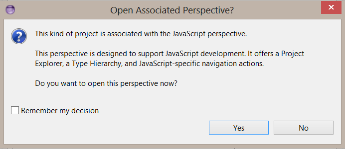
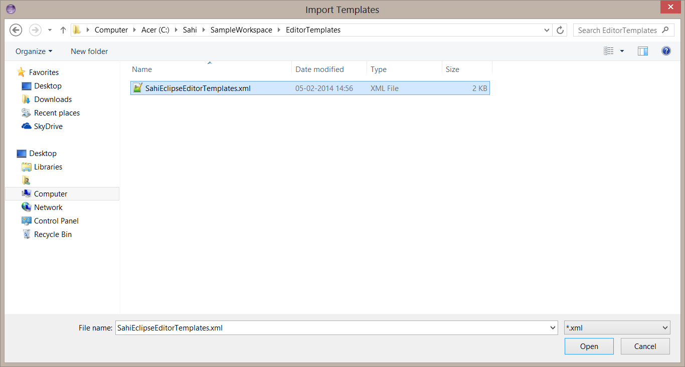

Sahi Pro - Eclipse configuration for Syntax Highlighting, Template proposals and Refactoring in Sahi scripts
You can use any text editor to write your sahi scripts. But
Eclipse as an editor provides advantages like Syntax highlighting, Template proposals and Refactoring. This article explains how to use Eclipse as editor for Sahi scripts.Sahi scripts - .sah Vs .js
Sahi scripts carry a.sah extension. But a .js extension can be used in place of .sah. Sahi treats a .js file the same as a .sah file.To write scripts in Eclipse, one needs to have the
JSDT Eclipse plug-in installed. The JSDT Eclipse plug-in provides native support for JavaScript (.js) files. One can add support for .sah files as well. But the JSDT plugin provides some additional features for .js files as compared to .sah files. Hence it is possible to rename .sah files as .js files and get better Eclipse support without losing any Sahi functionality.danger
We are looking at ways to make the script authoring experience easier and better for end users. At the time of writing this document, Sahi scripts carry a
.sah extension by default. We are undecided on whether we will change the default extension to .js in a future release. We leave it to the end user to decide whether to use scripts with a .sah extension or change them to have a .js extension. This document explains how to deal with both extensions.info
If any configuration step is specific to
This document explains features available for both
.sah or .js files, it is explicitly mentioned. Unless explicitly mentioned, the step applies to both .sah and .js files.This document explains features available for both
.js and .sah files. If some feature is not available for .sah files, it is explicitly mentioned.danger
It is assumed that your scripts will either have a
.sah or .js extension.danger
The steps have been documented for
Eclipse Kepler (Eclipse Standard 4.3.1 - Windows 64 Bit version) version. It is possible that you may face difficulties with a different Eclipse version.Eclipse configuration
-
Open Eclipse. It will ask for the workspace path. We will assume that the workspace is (to be) created at the following location:
C:\Sahi\SampleWorkspace. Specify the workspace path as indicated below, and clickOK.
-
Ensure that the
JSDTEclipse plug-in has been installed. Click onHelp | About Eclipse SDK | Installation Details.

-
If not installed, click on
Help | Install New Software. Use the settings displayed in the image below.
If you are using an older version of Eclipse, you should see a corresponding update site in theWork withdropdown box.
Proceed with the installation.
Restart Eclipse after installation. Give the same workspace path as before -C:\Sahi\SampleWorkspace. -
Adding support for
.sahfiles
danger This step applies only if you are using.sahfiles. This is not needed for.jsfiles.
-
Click on Windows | Preferences | General | Content Types
-
In
Content types:section, selectText | JavaScript Source Fileand then inFile associations:section, click onAdd.
-
Make association for
*.sahand clickOK.
-
Click on Windows | Preferences | General | Content Types
-
Let us now create a new JavaScript Project.
Click onFile | New | Project...Search for JavaScript Project in Wizards and click onNext
Give a Project name of your choice. We have given it the name:SampleProject. ClickNextYou should see the following two JavaScript Libraries in the Libraries tab
- ECMAScript Built-in Library
- ECMA 3 Browser Support Library
Finish
If this is the first JavaScript project you created, anOpen Associated Perspectivedialog box will be opened, prompting you to use the JavaScript perspective.
ClickYes.
 -
You can create new files and folders under the project created. We will place all Sahi scripts inside a
scriptsfolder.
To create a new folder, right click on the project, and then click onNew | Folder. Give the folder name asscriptsand click onFinish.
To create a script file inside thescriptsfolder, right click on the folder, and then click onNew | File. Give the new file its appropriate name and click onFinish. Let us name the file assampleFile.js. If you intend to use.sahextension, name it assampleFile.sahYou can copy your existing scripts into the scripts folder of the current project by pasting them at the appropriate location -C:\Sahi\SampleWorkspace\SampleProject\scripts. The screenshot shows scripts as.jsfiles. If you intend to use.sahextension, the scripts will be.sahfiles.
Refresh the project to see the copied files in your Eclipse IDE.
-
The
JSDTplugin provides various templates for auto completion. Example:for,ifetc.
info These templates can be used inSahi ships with a readymade template file, SahiEclipseEditorTemplates.xml that customizes some of these templates for better use in Sahi scripts..jsas well as.sahfiles.
Download SahiEclipseEditorTemplates.xml to a folder location, sayC:\Sahi\SampleWorkspace\EditorTemplatesTo install this templates file, click onWindow | Preferences.
Now go toJavascript | Editor | Templatesas shown in the figure and click onImporton the right.
Select the templates fileSahiEclipseEditorTemplates.xmlthat we downloaded above, and pressOpen.
 PressOKon theTemplateswindow.SahiEclipseEditorTemplates.xmlhas now been successfully imported.
To make use of any template, type the first few letters of the template and pressCtrl + Spaceto bring up the template proposal.
Here are a few examples.
Example: Type the first few letters of the templatetestcaseand pressCtrl + Spaceto bring up the template proposal for_testcase.
Example: Type the first few letters of theforloop command and pressCtrl + Spaceto bring up template proposals related tofor.
Likewise you can expand other templates listed at the location below.
-
Template functionality can also be added for
Sahi APIs.
info These templates can be used in.jsas well as.sahfiles.
-
If you are using
.sahextension, copyapis.sahfrom<SAHI_INSTALL_FOLDER>/userdata/scriptsinto thescriptsfolder in the project.
-
If you are using
.jsextension, copyapis.sahfrom<SAHI_INSTALL_FOLDER>/userdata/scriptsinto thescriptsfolder in the project and rename it asapis.js.
Open any.js(or.sah) file from the JavaScript project, and you should be able to seeSyntax highlighting.
Type the first few letters of a Sahi function and pressCtrl + Spaceto bring up template proposals for Sahi APIs.
-
If you are using
Refactoring a script into functions
info
This feature is available in
Once you have a recorded script, Eclipse can help in refactoring the linear script into functions..js as well as .sah files.We have taken the following script to demonstrate refactoring using Eclipse
Refactoring in Eclipse requires the code to be part of a function. Since the recorded script is not part of any function, we will first create a function surrounding our original code.
Select all the lines of code,
Right Click | Surround With | function (function) as shown in the figure. Give the function an appropriate name (we have named it sampleApp). We will remove this function at the end of the Refactoring.Now, to extract a function out of selected lines of code, do the following:
Select the lines of code | Right Click | Refactor | Extract Function.A dialogue box would show up, write the function name, and press
OK, as shown in the figure.Repeat the same steps for all the lines of code you want to extract out as functions. At the end of this exercise, our script now looks like this:
- You can see the following changes in the script:
- The selected lines of code have been replaced by functions and calls to the respective functions.
- The refactored function code may not be formatted correctly. If so, you will have to format it manually.
- The created functions do not have any parameters. We will fix this in the next step.
Select the value | Right Click | Refactor | Introduce Parameter.Give a name to the parameter, beginning with
$ and press OK. Here we have named the parameter as $java
You can see that the value has been extracted out as a parameter and function calls have been modified to pass a value for the parameter.We continue doing this for all the variables in our script. At this point, the script looks like this:
We still have the temporary function we had made at the starting of Refactoring code,
sampleApp. The script now looks like this:Let us now move the functions
login, addAndAssertTotalCost and logout to a different file so that they can be included from multiple scripts.warning
The functions have to be moved manually.
Add a new file called sampleLib.js (or sampleLib.sah if you are using .sah extension). Copy the functions to this file. This will have to be done manually.Remove the functions from
sampleFile.js (or sampleFile.sah if you are using .sah extension). Include sampleLib.js (or sampleLib.sah) using _include manually. sampleFile.js now looks like thisRenaming a function or variable name
info
This feature is available in
.js as well as .sah files.danger
However, it appears that it is more reliable in
There are times when one needs to rename a variable or function name. On doing so, the name should get changed at all places of usage, in all scripts..js files than in .sah files.Eclipse allows for such refactoring. Let us see how to rename a function name. We will rename the function
addAndAssertTotalCost to addBooksAndAssertTotalCost.To do this, open
sampleLib.js, select addAndAssertTotalCost, Right Click | Refactor | Rename (or select addAndAssertTotalCost and press Alt + Shift + R).You will be asked to enter a new name. Enter the new name
addBooksAndAssertTotalCost and press Enter.The function name gets changed to
addBooksAndAssertTotalCost.
Open
sampleFile.js. You will notice that the function name has been changed automatically in this file as well. If this function were to be included in other files, it would get modified at all these locations.
If this function were to be included in other files, it would get modified at all these locations.Navigate to functions
danger
This works only for
One often needs to open a function declaration to view its contents. The function declaration could be present inside another script altogether. For example, let us try and look at the function declaration of .js files and not for .sah files.addBooksAndAssertTotalCost from inside sampleFile.js.One can open a function declaration in the following ways.
-
Press the
Ctrlkey andhover the mouse over the functionthat you want to open. The function name will appear as alink.
Click on thelinkwhile keeping theCtrlkey pressed.
-
Or select the function,
Right Click | Open Declaration.
-
Or select the function, and press
F3.
You will be navigated to the function declaration in the appropriate script file. In this case, you will be navigated to
addBooksAndAssertTotalCost in sampleLib.js.